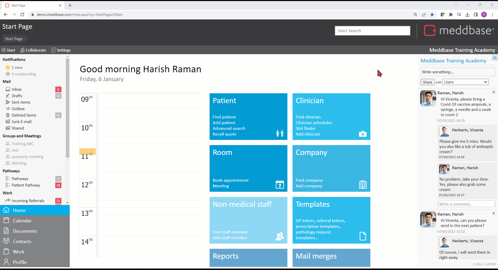
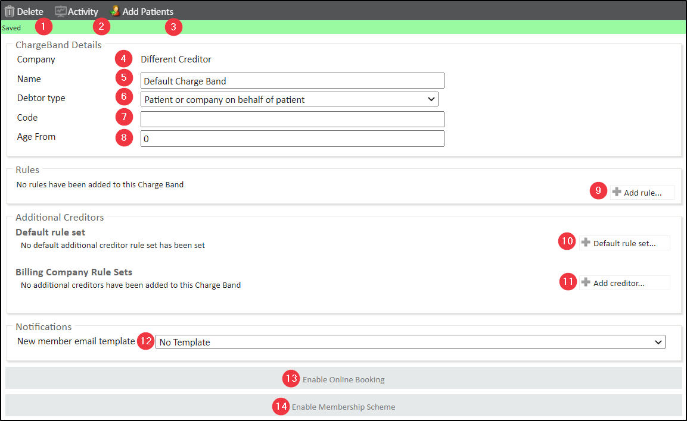
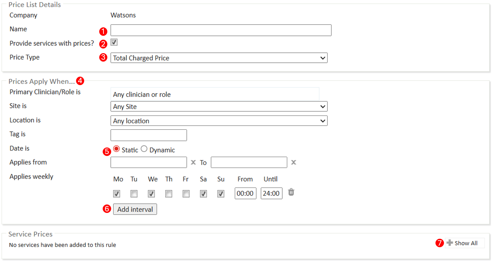
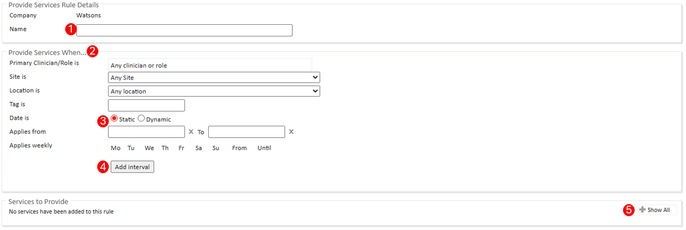
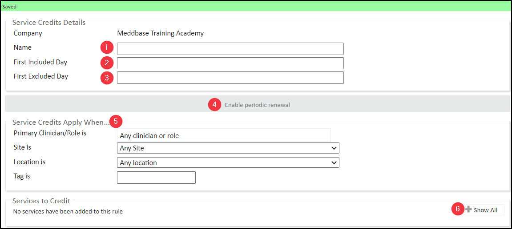
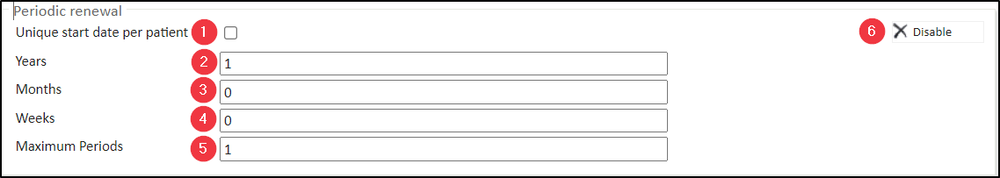

Meddbase is a complex, multi-layered EMR system, capable of accommodating a wide variety of workflows and business models ranging from small practices, straightforward setup and only a couple of people using the application, through to global enterprises with thousands of users and nuanced workflows and business requirements.
Meddbase provides a high number of configuration options allowing the application to adapt to complex business scenarios, as well as a host of default settings that it can fall back on when complexity is minimal.
Meddbase can be and is used in Primary Care, Secondary Care as well as in Occupational Health.
This article is the 3rd in a series of articles providing overview and details of setup and configuration steps required for Practice Management, which focuses on the application of the Meddbase system in Primary and Secondary Care.
Click here for Part 1.
Click here for Part 2.
Click here for Part 3.2.
Click here for Part 4.
Click here for Part 5.
This article will discuss the below concepts and walk you through the following steps:
When speaking of Billing Rules, the first concept we need to consider is a Charge Band. A Charge Band is a container for individual rules or sets of rules that define the pricing and eligibility for services for a patient or company.
A patient may be paying for themselves for the services they consume, or they can be paid for by another entity, e.g., their employer or insurance company, or even another patient, and the Billing Rules engine takes the burden of remembering these different scenarios away from the user and automates it.
Every patient in Meddbase has a Personal Details page, where in the Account section you can select who the Payer is. For self-pay patients, you would select Patient here.
Furthermore, if the patient is not the payer, you can select the payer type* and search the relevant entity in the appropriate section.
That entity's Charge Band determines the appointment and services the patient will be eligible for and any conditions that have to be met for those appointments and services to be available.
*When Other Account is selected as the payer for a patient, the selected account will be the Debtor on any invoices raised, however eligibility and prices will still be taken from the Patient’s Charge Band not the Other Account’s Charge Band
Depending on the needs, therefore, a chamber:
And everything in-between.
The Billing Rules engine is highly logical and can accommodate a wide variety of billing scenarios with a handful of accurately applied rules. A few fundamental questions are worth asking here:
Your answers to the above questions and others, specific to your business will determine which Billing Rules/combination of Billing Rules to apply on (a) given Charge Band(s).
Individual Billing Rules and their utility are explained in this article.
To access Billing Rules:
By default on this page you will see icons representing Internal type companies. First and foremost this will be your Chamber Company*.
*The Chamber Company is the default company in your chamber and can not be deleted. It is also the default Creditor on invoices, unless configured otherwise.
If you wish to create or edit billing rules for another company that has a record in your system, you can add it to the view by searching its name in the Add Companies field and clicking the search result.

A Charge Band is a set of rules governing what services a payer is eligible for and how much those services cost.
A Default Charge Band gets created automatically for every entity, including your chamber company, however such charge band serves as a placeholder, as it does not include any rules, e.g. Price List, and it will not define pricing, eligibility for services and other billing scenarios until you add rules to it.
In other words, an empty charge band doesn’t do anything.
A Charge Band belongs to the company it is under and can not be transferred/moved to a different company.
The same is not true for other Billing Rules, e.g. Price List, which can be created under one company and then added to a Charge Band belonging to another company.
To view the configuration options, expand the relevant company icon and click on the Charge Band you wish to view/configure.
A Charge Band includes the below options and allows for the below configuration:

1. Delete - this button allows deleting this Charge Band1.
2. Activity - this button opens an activity log for the Charge Band, which lists changes/additions made on this Charge Band, incl. action time stamp and the username.
3. Add Patients - this button opens a dialog window where you can select another Charge Band you would like to move patients from onto this Charge Band2.
4. Company - this field displays the name of the company this Charge Band belongs to
5. Name - this field allows you to name the Charge Band as you see fit. You can also create a folder for the Charge Band by adding FolderName/ in front of the name.
6. Type - this dropdown provides three choices:
7. Code - this field allows assigning an alphanumeric code to this Charge Band for reporting purposes.
8. Age From - this field allows setting an age limit as an integer for patients that can be assigned to this Charge Band.
9. Rules/Add Rule - this section allows adding billing rules to this Charge Band4.
10. & 11. Additional Creditors (Default rule set/Billing Company Rule Sets)5 - the Additional Creditors section of the Charge Band can be used whenever some services need to be invoiced for from a billing company that is linked to an appointment medical attendee (doctor). This can be achieved with a Rule Set specified for the medical attendee's (clinician's) billing company and added to the Billing Company Rule Sets section.
If a clinician’s billing company does not have a rule set specified, but the clinician’s fees are still required to be billed separately, a general rule set for Other Companies can be applied to the Default Rule Set section of the charge band.
12. New member email template - this dropdown allows selecting an existing Email Template6that will be used to send an email to a new patient added to this Charge Band.
13. Enable Online Booking - this button enables this Charge Band for online bookings7 and is required as a part of a larger setup of the Patient Portal feature.
14. Enable Membership Scheme - this button allows setting up a Membership Scheme8 on this Charge Band on a weekly, monthly or yearly billing frequency.
1 Patients assigned to this Charge Band need to be migrated to a different Charge Band before you can proceed.
2 When migrating patients between Charge Bands within the same company or cross-companies where 1 is Enabled for Online Booking and the 2nd isn't, additional actions will be required.
3 Click here for more details billing a company for products and services.
4The minimum setup required is for the Charge Band to provide services via either: Price List, Provide Services Rule or Service Credits Rule
5 Click here for more details on Additional Creditors.
6 The Email Template must be saved under Templates > System Templates > AutomatedMessages to be available for selection here. Click here for more details on Templates.
7 Click here for more details on Online Charge Bands.
8 Click here for more details on setting up Membership Schemes.
The fundamental function of a Charge Band is to provide services to patients directly (Self-pay) or indirectly, when their payer is a 3rd party.
There are 3 ways appointments and services can be provided on a Charge Band:
The most common way to provide appointments and services on a Charge Band is to create and configure a Price List1and add it to the relevant Charge Band.
To create a Price List:
1. Expand the relevant company icon2
1A Price List can provide appointments and services, and raise charges (invoice) when prices are expressed as an integer with 2 decimals, or provide them free of charge when prices are stated as '0'.
2 1 Price List can be added to multiple Charge Bands and it does not matter which company you create it under. Typically, if the same Price List is relevant to multiple 3rd parties, it is advised to create the rule under the chamber company.
2. Click +Add rule
3. Click New Price List

The Price List configuration dialog presents the below configuration options:
1. Name - this field allows you to name the Price List as you see fit. You can also create a folder for the Price List (and other rules) by adding FolderName/ in front of the name.
2. Provide services with prices? - this checkbox is ticked by default. It determines whether appointments and/or services with a stated price (integer with 2 decimals or '0' as opposed to blank) will be provided on the Charge Band this Price List is added to.
3. Price Type - this dropdown provides 2 choices:
An insurer Charge Band has a Benefit Maxima Price List, with a price of £50. The Charge Band also has a Total Charge Price Price List, with a price of £200. When this service is provided, two invoices will be raised as below:
Insurer Invoice: £50 (Taken from the Benefit Maxima Price List)
Patient Invoice: £150 (Total Charged Price less Benefit Maxima, so £200 - £50)
4. Prices Apply When - this section allows you to specify when the Price Lists applies, such as:
5. Date is - this section allows defining Static or Dynamic date ranges2 this Price List will apply within.
1 Sites and Locations can be added to your chamber in Admin > Common Catalogues > Site
2 Click here for more details on working with date ranges.
6. Applies Weekly - this section allows you to define the interval you wish this rule to apply. Click add interval to configure days of the week and hours of operation that this rule should apply.
7. Service Prices/+Show All - this section allows you to select the appointment types and services this Price List will include, as well as state the prices as an integer with 2 decimals if you wish to charge for them, or as '0' if the Price List will provide them free of charge.
Another way to provide appointments and services on a Charge Band free of charge is to is to create and configure a Provide Services Rule and add it to the relevant Charge Band.
To create a Provide Services Rule:

The Provide Services Rule configuration dialog presents the below configuration options:
1. Name - this field allows you to name the Provide Services Rule as you see fit. You can also create a folder for the Provide Services Rule (and other rules) by adding FolderName/ in front of the name.
2. Prices Apply When - this section allows you to specify when the Price Lists applies, such as:
3. Date is - this section allows defining Static or Dynamic date ranges this Provide Services Rule will apply within.
4. Applies Weekly - this section allows you to define the interval you wish this rule to apply. Click add interval to configure days of the week and hours of operation that this rule should apply.
5. Services to Provide/+Show All - this section allows you to select (tick) the appointment types and services this Provide Services Rule will apply to.
One more way to provide appointments and services on a Charge Band free of charge is to is to create and configure a Service Credits Rule and add it to the relevant Charge Band.
Click here for a detailed article on using this rule.
This rule allows providing appointments and services a limited number of times within a specified time frame as a one-off or on a recurring basis.
To create a Service Credits Rule:

The Service Credits Rule configuration dialog presents the below configuration options:
*Periodic renewal
Once periodic renewal is enabled on a service Credits Rule you can set a time frame for the credits to be renewed.
When this option is enabled the First Excluded Day field should be left blank.
